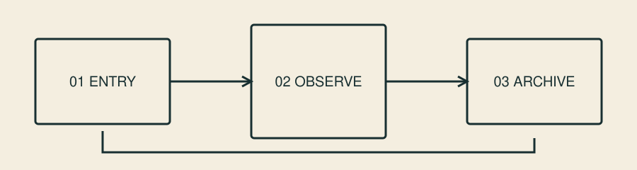
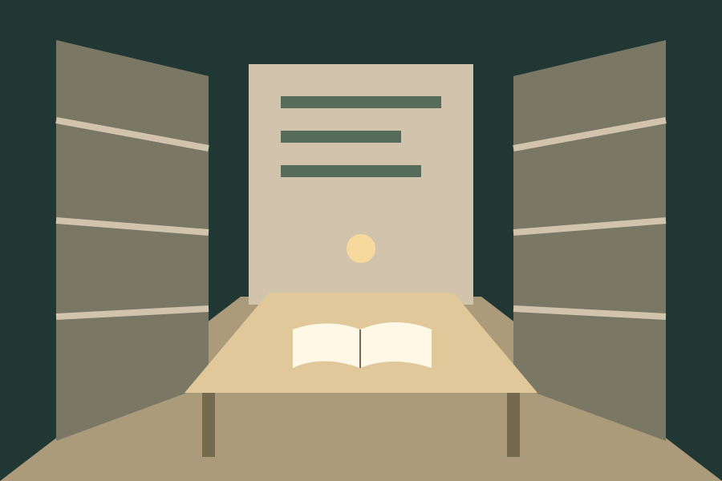

01 · 入口 / 问题
我们怎样看见变化？先辨认对象、时间与观察方式，不急于给结论。
三站概念体验：入口、观察室、资料室。由你决定何时前进或返回；也可以直接阅读全部文字。
先辨认一个对象，再决定怎样记录。远处亮面是地标，不是需要寻找的隐藏按钮。
虚构计划：12 个观察点 · 3 轮记录 · 30 分钟。没有真实传感器数据。

我们怎样看见变化？先辨认对象、时间与观察方式，不急于给结论。
用一致的方法记录12个点位，安排3轮复看。地标帮助定位，数字提供任务结构。
这是一份虚构研究计划。保留未知项，不把概念场景误当环境变化的证据。

走廊让人定位，阅览桌让人停留，目录让人找到下一段内容。新主题可以更换地标和材质，不需要保留海岸色彩。
本段实现了独立静态概念图，未实现第二个可导航3D场景，也不表示真实图书馆开放计划。
空间解释章节关系，固定导航和平面文字保证访问不依赖眩目的转场。
隐藏退出、强制自动飞行或把重要文字压在不断变化的透明背景上。